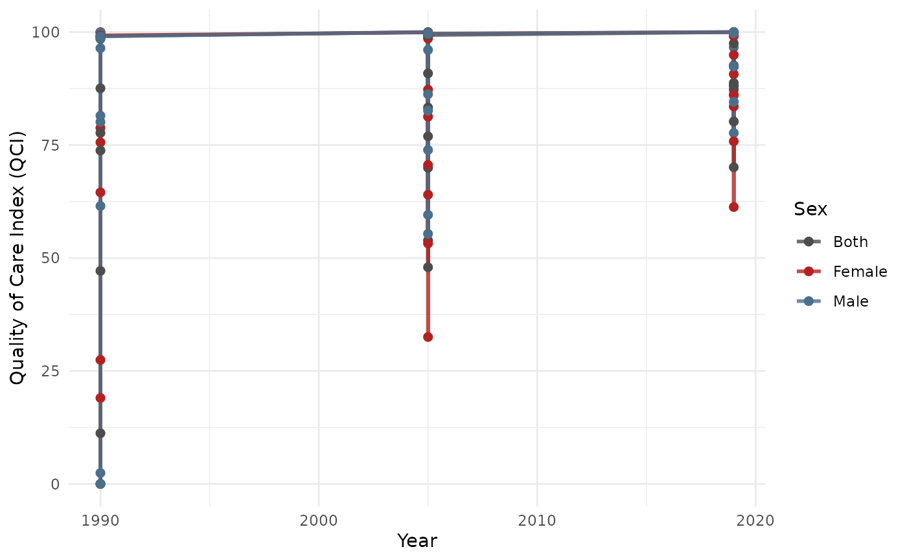

Creates line plots of QCI over years, optionally stratified by sex and/or faceted by location.
Arguments
- data
A data.frame with columns:
year,qci_score,sex_name,location_name,age_name.- locations
Character vector of location names. Default
NULL(all).- sex
Character vector of sex categories to include. Default
c("Male", "Female", "Both").- age
Character. Default
"Age-standardized".- colors
Named character vector. Default
c(Male = "skyblue4", Female = "firebrick", Both = "grey30").- facet_by
Character. Column to facet by. Default
NULL.- free_y
Logical. Free y-axis scales in facets. Default
FALSE.
Examples
data(sample_gbd)
result <- qci_pipeline(sample_gbd)
#> ℹ Cleaning and reshaping data...
#> ✔ Cleaned data: 9 locations, 3 years.
#> ℹ Computing epidemiological ratios...
#> ℹ Running PCA...
#> ℹ PCA done for "Both / Age-standardized": 74.1% variance explained (n=27).
#> ℹ PCA done for "Female / Age-standardized": 75.7% variance explained (n=27).
#> ℹ PCA done for "Male / Age-standardized": 73.2% variance explained (n=27).
#> ℹ Creating long format output...
#> ✔ QCI pipeline complete.
plot_qci_trend(result$wide)
